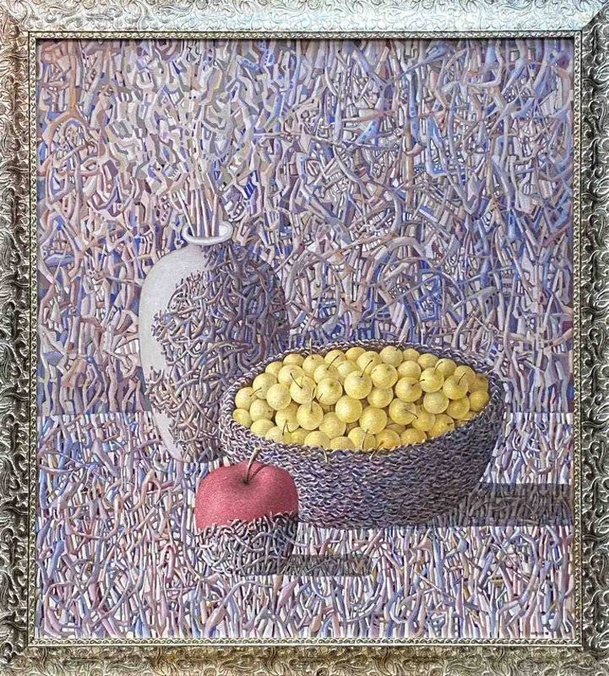
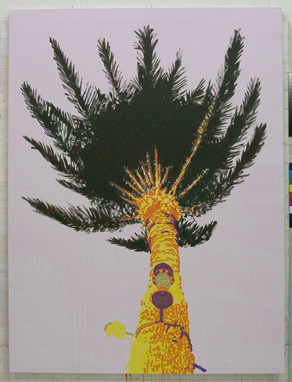
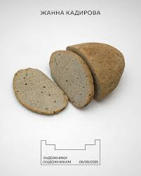
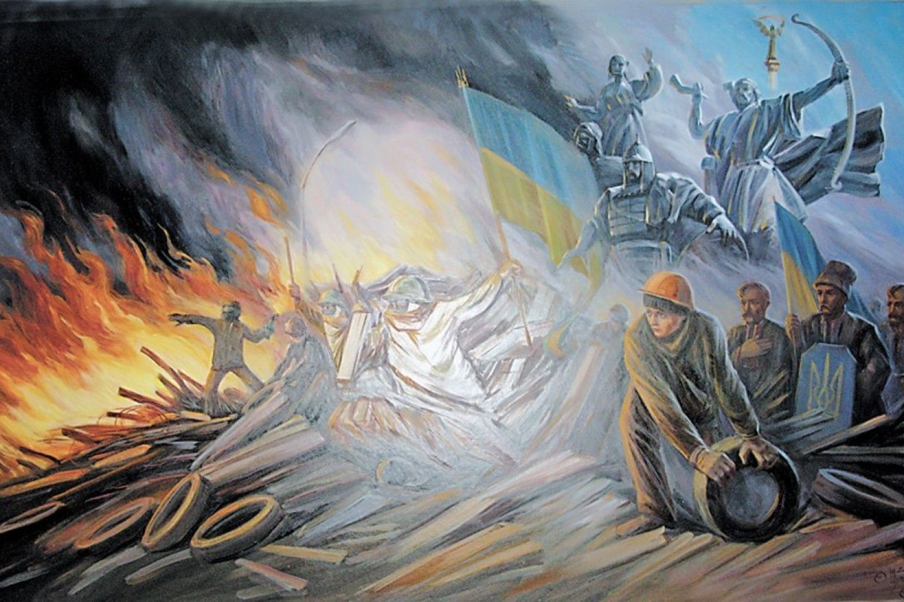

Художники та митці
Іван Марчук
Всесвітньо відомий український художник Іван Марчук активно підтримує Збройні сили України, передаючи свої полотна для благодійних аукціонів та спрямовуючи виручені кошти на потреби армії.
Ключові факти його внеску у перемогу:
- Благодійні аукціони: У грудні 2025 року на аукціоні у Львові за дві картини митця вдалося отримати 3,5 млн грн.
- Рекордні продажі: Картина «Сад спокуси» була продана за рекордні на той час 120 тис. доларів. Половину від вартості лотів на цьому аукціоні було передано благодійному фонду, що опікується ЗСУ.
- Публічна позиція: Художник регулярно наголошує на важливості мистецького внеску в обороноздатність країни.
- Інформаційний фронт: Окрім фінансової допомоги, Марчук активно бере участь в обговореннях ролі мистецтва під час війни.

Олег Тістол
Олег Тістол — один із найвпливовіших сучасних художників України. Його роботи відомі поєднанням національних символів та сучасних контекстів, а серія «Пальми» стала одним із найбільш впізнаваних образів у сучасному українському мистецтві.
Ключові факти його внеску у перемогу:
- Благодійні аукціони: Роботи художника регулярно з'являються на провідних світових аукціонах. Кошти від продажу полотен неодноразово спрямовувалися на потреби ЗСУ.
- Проєкт «Ай-Петрі»: Тістол бере участь у мистецьких ініціативах, де частина прибутку йде у фонди допомоги.
- Публічна позиція: У квітні 2026 року митець вчергове наголосив, що культура — це також зброя.
- Інформаційний фронт: Окрім фінансової допомоги, Тістол бере участь в обговореннях ролі мистецтва під час війни.

Жанна Кадирова: Мозаїка Сенсів
Жанна Кадирова — видатна українська художниця та скульпторка. Після початку повномасштабної війни її творчість трансформувалася у потужний волонтерський інструмент.
Ключові факти її внеску у перемогу:
- Проєкт «Паляниця»: Художниця створює скульптури з річкового каміння, що імітують хліб. Кошти від їх продажу повністю йдуть на благодійність.
- Фінансова допомога: Завдяки своїм виставкам по всьому світу вона зібрала понад 400 000 євро для військових підрозділів.
- Культурна дипломатія: Представляючи Україну на міжнародних майданчиках, Жанна привертає увагу світової спільноти до війни.

Олег Шупляк
Олег Шупляк — заслужений український художник, який активно підтримує Збройні Сили України та благодійні ініціативи.
Ключові факти його внеску у перемогу:
- 2022, Люксембург: персональна виставка-продаж картин. Усі кошти були передані на підтримку України.
- 2022, Лондон: участь у колективній виставці UK for Ukraine. Виручені кошти спрямовані на допомогу ЗСУ.
- 2022, Берлін: виставка «Серце України» у Берлінській філармонії у благодійному форматі.
- 2021–2023: численні акції підтримки дітей зі сходу України, поранених бійців та військових.

Олексій Ревіка
Олексій Ревіка — український сучасний художник, який працює у стилі символізму та сюрреалізму, часто реагує на події війни в Україні.
Ключові факти його внеску у перемогу:
- У своїх роботах він осмислює події повномасштабного вторгнення, фіксуючи важливі історичні моменти в художній формі.
- Рекордні продажі: Його роботи беруть участь у виставках і мистецьких продажах, які мають благодійну спрямованість.
- Публічна позиція: Підтримка України в умовах війни та осмислення сучасних подій через мистецтво.
- Інформаційний фронт: Серія плакатів воєнного часу привертає увагу міжнародної спільноти та формує антивоєнний наратив.
Саша Корбан
Олександр Корбан - український художник графіті. Він робить свій внесок у перемогу через мистецтво, волонтерство та підтримку армії.
Ключові факти його внеску у перемогу:
- Відомі мурали: «Зшита Україна» (Київ), Мурал на честь ЗСУ (Київ), Мурал про прикордонників (Хмельницький), емоційний Мурал "Мілана" в Маріуполі.
- Продажі: Корбан активно продає копії своїх картин, та значну частину заробітку передає на ЗСУ.
- Інформаційний фронт: Митець воює на інформаційному фронті мистецтвом та виступає проти війни.
- Публічна позиція: Відкрито підтримує Україну, висловлює вдячність ЗСУ та розповідає правду про війну через мурали.

Гамлет Зіньківський
Гамлет Зіньківський — український художник, відомий своїми стріт-арт роботами та ілюстраціями.
Ключові факти його внеску у перемогу:
- Залишається працювати в Харкові під час війни.
- Створює роботи про війну та життя в Україні.
- Підтримує українців через своє мистецтво.
- Бере участь у благодійних арт-проєктах на допомогу ЗСУ.